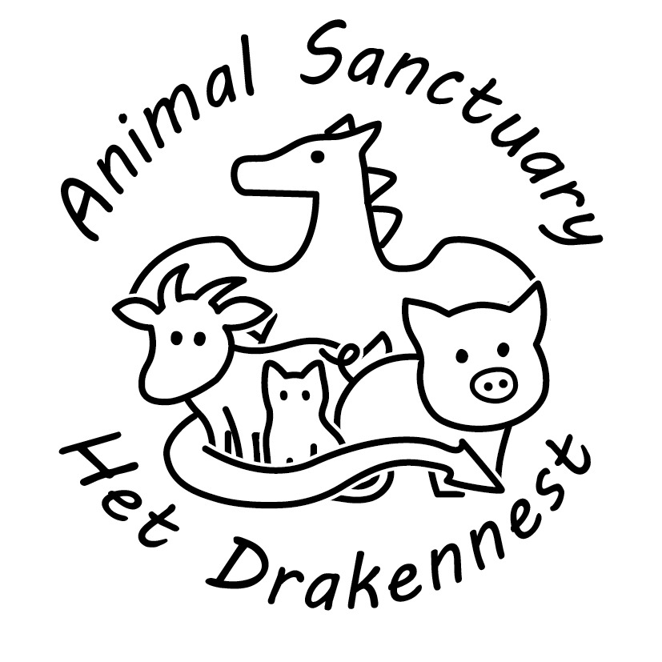

Stichting Sanctuary het Drakennest
Over ons
Alle dieren worden draakjes als ze de ruimte krijgen om zichzelf te zijn. Daar maken we op het drakennest ruimte voor! Wij bieden dieren een veilige plek om te leven en oud te worden <3
Donaties
Wilt u ons steunen? Dat vinden onze draakjes natuurlijk heel leuk! Hoewel we nog geen ANBI zijn kun je al doneren door een bedrag over te maken op onderstaand rekeningnummer. Houd dan rekening met de regels van de Belastindienst onder het kopje 'ANBI-informatie'.
Naam: Stichting Sanctuary het Drakennest
IBAN: NL84 TRIO 0321 3671 89
BIC: TRIONL2U
ANBI-informatie
Stichting Sanctuary het Drakennest is nog GEEN ANBI. De stichting is momenteel bezig met het aanvragen van ANBI-status en verwachten die in 2027 te krijgen.
Dit betekent dat schenkingen aan de stichting geen fiscaal voordeel opleveren, en dat de stichting over schenkingen boven €2.769 schenkbelasting moet afdragen. Dit maximumbedrag is vastgesteld door de Belastingdienst, en is ook van toepassing op meerdere schenkingen in 1 jaar en schenkingen door fiscale partners.
Zo lang wij nog geen ANBI status hebben, houden we ons zo veel mogelijk aan de regels die daar voor gelden. Dat betekent:
- We zijn volledig gericht op een algemeen nut (namelijk het opvangen van dieren)
- We besteden ten minste 90% van onze inkomsten aan het bereiken van ons doel (en de rest aan randzaken zoals administratie)
- We hebben geen winstoogmerk
- We voldoen aan de integriteitseisen
- Geen persoon kan over het vermogen beschikken alsof het diens eigen vermogen is
- We houden niet meer vermogen aan dan redelijkerwijs nodig
- Ons bestuur krijgt niet betaald voor hun werk
- We zijn bezig met het opstellen van een beleidsplan
- We hebben een goede verhouding tussen beheerkosten en bestedingen
- We beginnen in 2027 met het publiceren van onze jaarrekening en jaarverslag (want dat is er in 2026 nog niet)
- We hebben een website (daar ben je nu)
- Als de stichting ooit stopt wordt het vermogen overgedragen aan een andere ANBI-stichting met een vergelijkbaar doel
Contact
- Postadres
- Meeuwenweg 23
7938PR Nieuw Balinge - Telefoon
- +31 (0)6 157 264 66